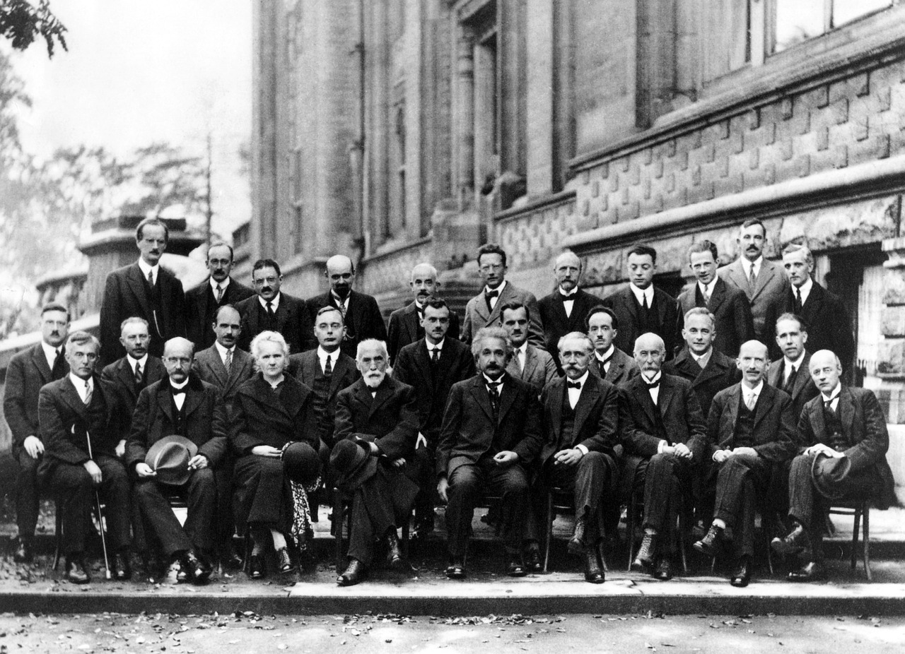

Albert Einstein
Albert Einstein was a physicist who developed the general theory of relativity. He is considered one of the most influential scientists of the 20th century.

1927 Solvay Conference on Quantum Mechanics
Here's a time line of Albert Einstein
- Einstein was born on March 14, 1879, in Ulm, Württemberg, Germany. Einstein grew up in a secular Jewish family. His father, Hermann Einstein, was a salesman and engineer who, with his brother, founded Elektrotechnische Fabrik J. Einstein & Cie, a Munich-based company that mass-produced electrical equipment. Einstein’s mother, the former Pauline Koch, ran the family household. Einstein had one sister, Maja, born two years after him. Einstein attended elementary school at the Luitpold Gymnasium in Munich. However, he felt alienated there and struggled with the institution's rigid pedagogical style.
- He dropped out of school in 1894 and moved to Switzerland, where he resumed his schooling and later gained admission to the Swiss Federal Polytechnic Institute in Zurich. In 1896, he renounced his German citizenship, and remained officially stateless before becoming a Swiss citizen in 1901.
- While working at the patent office, Einstein did some of the most creative work of his life, producing no fewer than four groundbreaking articles in 1905 alone. In the first paper, he applied the quantum theory (developed by German physicist Max Planck) to light in order to explain the phenomenon known as the photoelectric effect, by which a material will emit electrically charged particles when hit by light. The second article contained Einstein’s experimental proof of the existence of atoms, which he got by analyzing the phenomenon of Brownian motion, in which tiny particles were suspended in water.
- In 1913, he arrived at the University of Berlin, where he was made director of the Kaiser Wilhelm Institute for Physics. The move coincided with the beginning of Einstein’s romantic relationship with a cousin of his, Elsa Lowenthal, whom he would eventually marry after divorcing Mileva.
- In 1915, Einstein published the general theory of relativity, which he considered his masterwork. This theory found that gravity, as well as motion, can affect time and space. According to Einstein’s equivalence principle–which held that gravity’s pull in one direction is equivalent to an acceleration of speed in the opposite direction–if light is bent by acceleration, it must also be bent by gravity.
- A longtime pacifist and a Jew, Einstein became the target of hostility in Weimar Germany, where many citizens were suffering plummeting economic fortunes in the aftermath of defeat in the Great War. In December 1932, a month before Adolf Hitler became chancellor of Germany, Einstein made the decision to emigrate to the United States, where he took a position at the newly founded Institute for Advanced Study in Princeton, New Jersey. He would never again enter the country of his birth.
- Einstein remained active in the physics community throughout his later years. In 1939, he famously penned a letter to President Franklin D. Roosevelt warning that uranium could be used for an atomic bomb.
- On April 17, 1955 he died of an abdominal aortic aneurysm.
If you want more informationa about Albert Einstein click → here